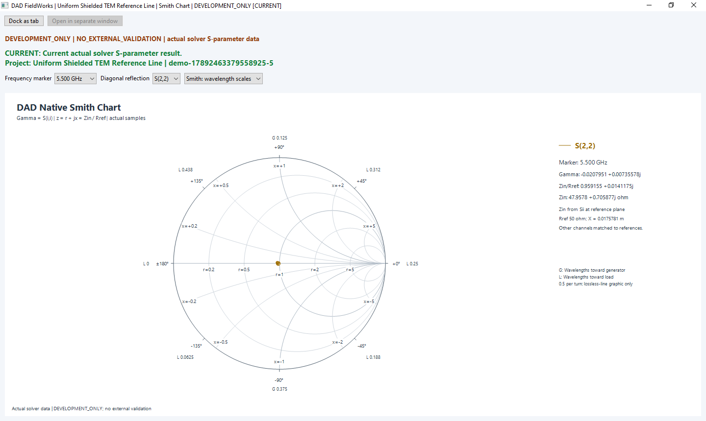

01
Define the geometry
Create parametric sketches and supported PCB structures. Define layers, materials and ports as part of the model.
DAD FieldWorks
Geometry, simulation and results in one engineering workspace.
We are developing DAD FieldWorks to help engineers model supported structures, inspect their electromagnetic response and follow the evidence behind each result.
Explore the resultsIn development · Native Windows application

The software
DAD FieldWorks brings the core stages of supported PCB and RF simulation into a native desktop application.
01
Create parametric sketches and supported PCB structures. Define layers, materials and ports as part of the model.
02
Specify supported excitations and frequencies. Review setup diagnostics and resource requirements before starting a solver job.
03
Read complex S parameters, inspect a Smith chart and explore saved native fields. Export supported results in Touchstone format.
A closer look
The field view above and this Smith chart come from the same reference case. They show different aspects of its response.
The Smith chart records S(2,2) at 5.500 GHz with a 50 Ω reference. The field image is a saved time domain state at 1.023875 ns.
The field state is not a field solution at the Smith chart’s selected frequency.
Explore this reference case
Development status
Working geometry, solver and result workflows are supported by internal numerical checks and saved application results.
External validation is not complete. DAD FieldWorks is in development and is not released for production use.
Product records reviewed on 15 September 2026. The latest integration checkpoint did not run new electromagnetic calculations.
Read the evidence and limitationsDigitalArtDeco Labs
We are an independent software company in Donauwörth. Our work on DAD FieldWorks focuses on PCB and RF modelling, electromagnetic simulation and the inspection of engineering results.
Have a technical question or want to discuss the development?
info@dadlabs.de